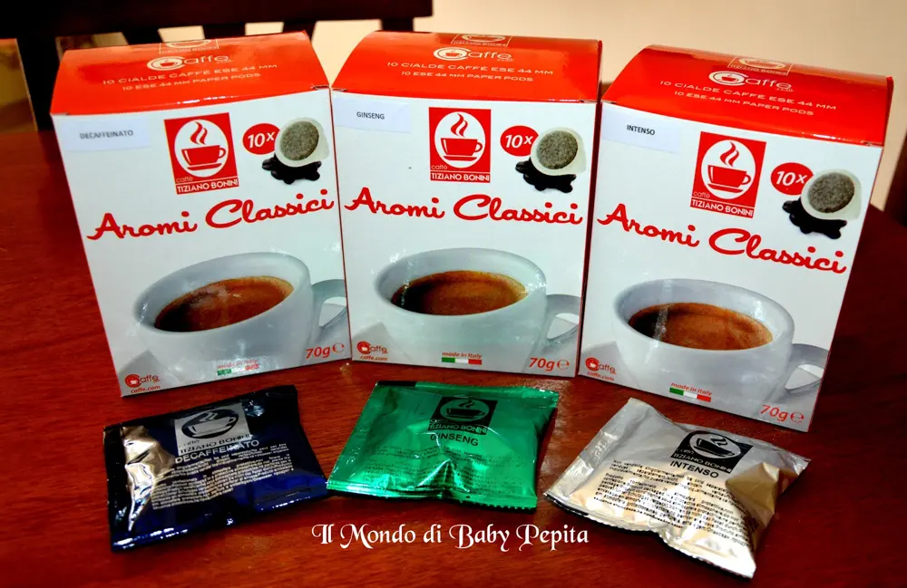
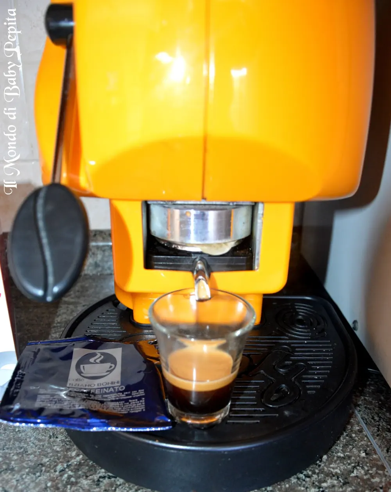
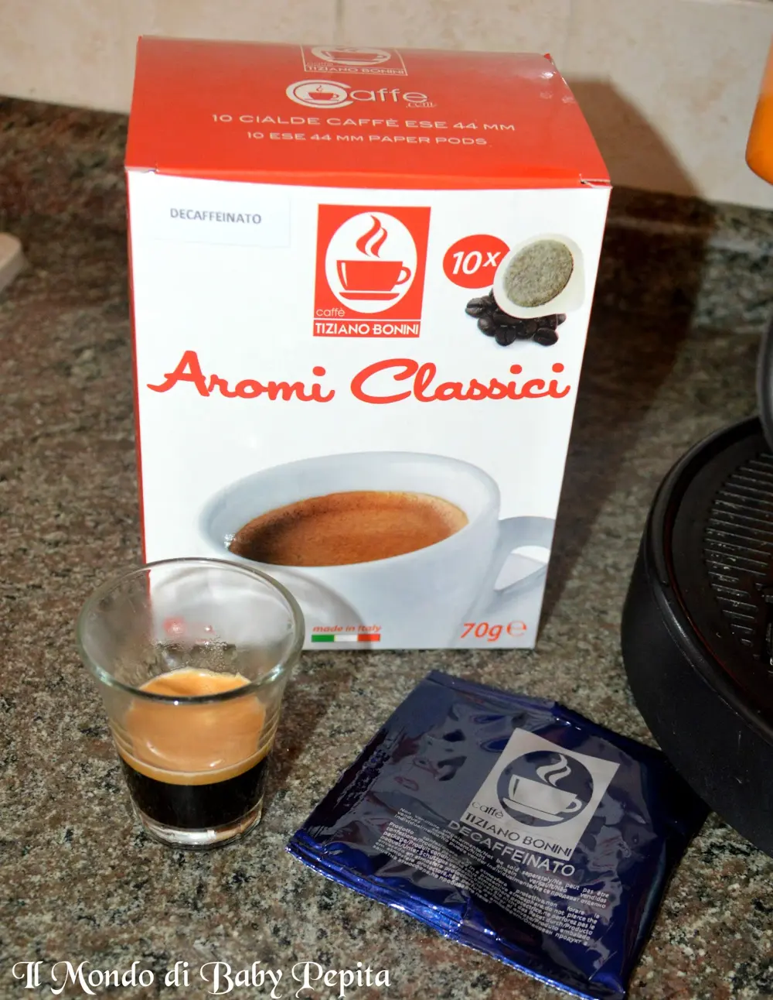
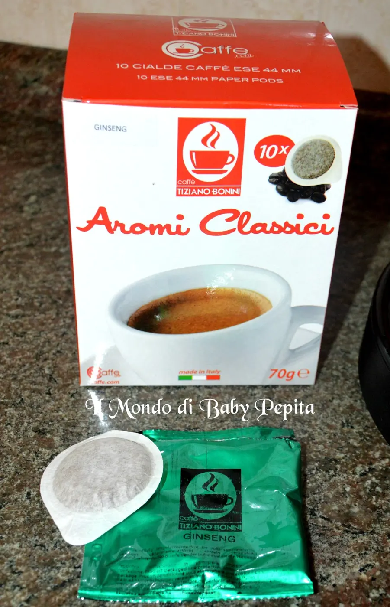
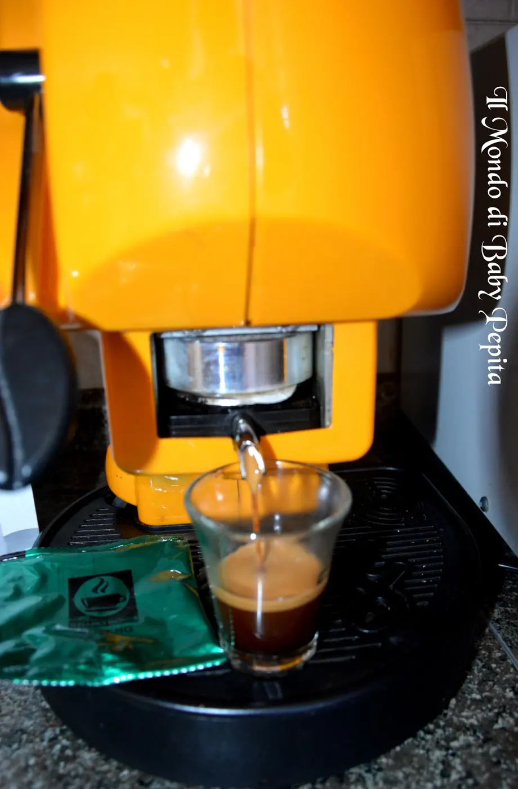
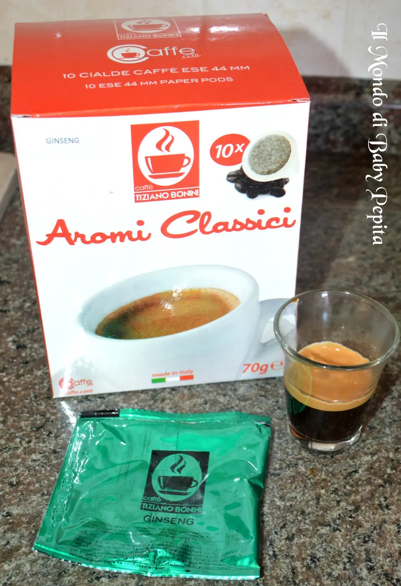
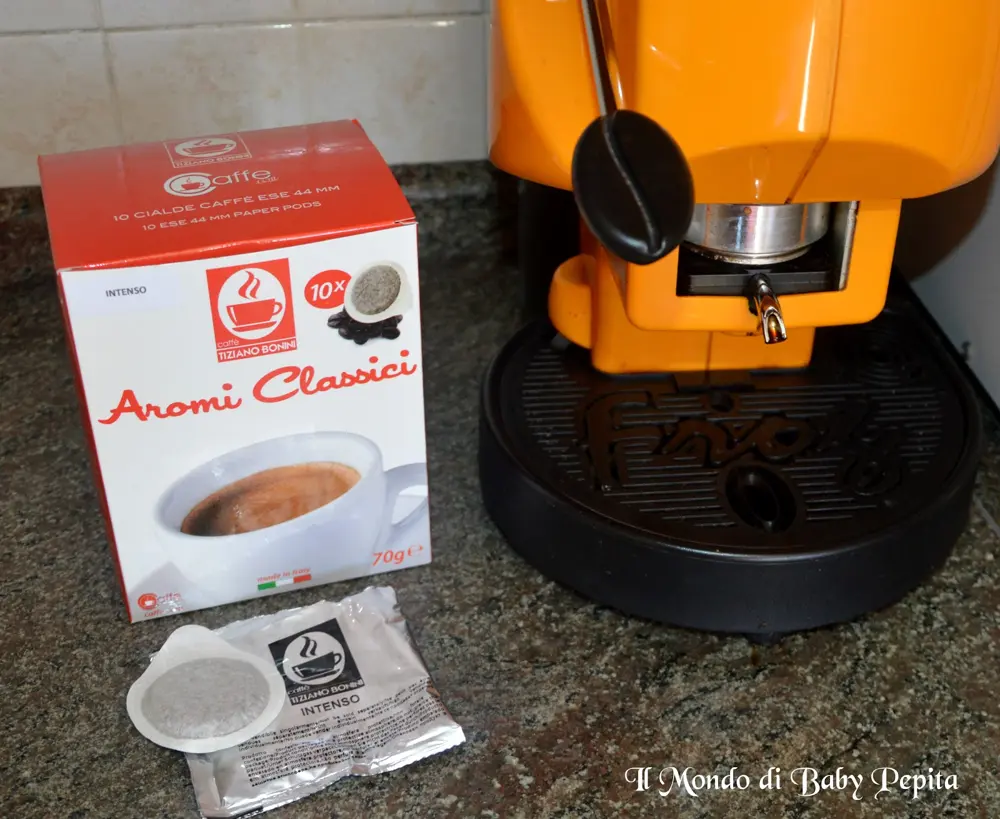
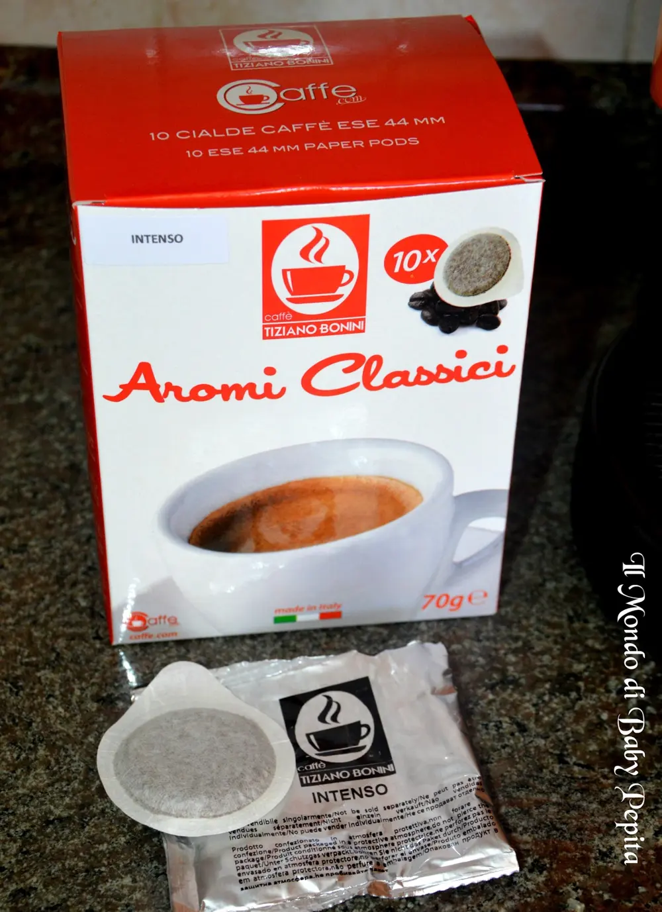
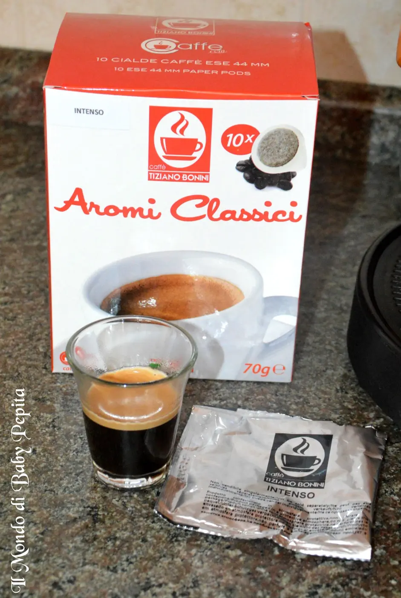

Prodotti caffè Bonini da caffè.com
A Napoli ogni momento è quello giusto per gustare un buon caffè..Da quando esiste l’espresso in cialde o in capsule, le pause sono anche aumentate :D Oggi vi parlo di un buon caffè che ho acquistato sul sito www.caffe.comche vende i prodotti compatibili Tiziano Bonini http://www.tizianobonini.it/http://www.tizianobonini.it/.Un’azienda che ha impiegato la sua passione per il caffè in una commercializzazione di prodotti a prezzi competitivi, garantendo la massima qualità. Per ottenere questi elevati standard di qualità, i titolari controllano personalmente tutti i passaggi della produzione, in modo tale da offrire sempre il massimo ai nostri clienti.Possiamo trovare i loro punti vendita in diverse città italiane.
Oggi vi parlo di un buon caffè che ho acquistato sul sito www.caffe.comche vende i prodotti compatibili Tiziano Bonini http://www.tizianobonini.it/http://www.tizianobonini.it/.Un’azienda che ha impiegato la sua passione per il caffè in una commercializzazione di prodotti a prezzi competitivi, garantendo la massima qualità. Per ottenere questi elevati standard di qualità, i titolari controllano personalmente tutti i passaggi della produzione, in modo tale da offrire sempre il massimo ai nostri clienti.Possiamo trovare i loro punti vendita in diverse città italiane.

Ho preso le cialde di 3 gusti differenti, ovvero:· DECAFFEINATO· GINSENG· INTENSODECAFFEINATO è adatto per chi non vuole rinunciare al piacere del caffè con una miscela in perfetto equilibrio tra gusto e leggerezza.

GINSENG abbina il ginseng con la tradizionale aroma del caffè.


INTENSO invece è adatto a chi ha voglia di un caffè corposo ed allo stesso tempo equilibrato. Già la parola INTENSO ci fa capire che c’è presenza di una miscela robusta con le sue note tostate unite alle arabiche del centro America.


 COM’E’ UN CAFFE’ AL GINSENG? VI SPIEGO IN POCHE PAROLE, ANCHE PERCHE’ FINO AD ORA NEMMENO IO SAPEVO COM’ERA E LA CURIOSITA’ ERA TANTA DA VOLERLO APPUNTO PROVARE.Il caffè al ginseng è una bevanda di origine asiatica molto simile nell’aspetto al caffellatte in quanto contiene crema di latte (generalmente di origine vegetale), caffè istantaneo, zucchero ed estratto di radici essiccate di ginseng.
COM’E’ UN CAFFE’ AL GINSENG? VI SPIEGO IN POCHE PAROLE, ANCHE PERCHE’ FINO AD ORA NEMMENO IO SAPEVO COM’ERA E LA CURIOSITA’ ERA TANTA DA VOLERLO APPUNTO PROVARE.Il caffè al ginseng è una bevanda di origine asiatica molto simile nell’aspetto al caffellatte in quanto contiene crema di latte (generalmente di origine vegetale), caffè istantaneo, zucchero ed estratto di radici essiccate di ginseng.IN CONCLUSIONE:
Vi consiglio di acquistare le vostre cialde o capsule su www.caffè.comanche perché è l’unico sito ad avere una spedizione sempre GRATUITA.Potete trovare, oltre ad un ampio catalogo di cialde e capsule dai caffè normali, a quelli aromatizzati, anche tisane, bevande solubili e thè. Il tutto si può scegliere se comprare a kit o anche a confezioni da 10 pezzi.
Date un’occhiata a questo sito davvero completo per i buon gustai e gli amanti di una buona pausa http://www.caffe.com/it-it/cialde-compatibili-ese-44mm